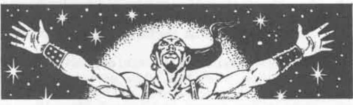

Tysiln San：法师谷第一守护者 · Tysiln San: First Protector of the Valley of the Mage
Tysiln San
法师谷第一守护者
 |
|
Tysiln San 出生在卓尔地底城的商人家庭。她由家人训练使用魔法，原本预计一生都与家人共度。当家人开始谋划推翻罗丝的女祭司时，她毫不动摇地给予了全力合作。
不幸的是，她家族的计划失败了，企图发动的叛乱几乎还没开始就被镇压。Tysiln San 为了活命逃亡，遇到了一名因魔法事务来到卓尔地底城的人类法师。她向他请求怜悯，他同意带她回到地表。
来到地表后，Tysiln San 发现自己身处一个训练完全没有让她准备好的世界。她患了数周的广场恐惧症（害怕巨大的开放空间），拒绝走到户外。法师设法克服了她的恐惧，并给了她一副魔法镜片。这副镜片由一位大师级制镜师制作，使佩戴者能够透过镜片看见东西，但从外面看却像镜子。在交给她之前，法师对镜片施展了玻璃钢化术，使它们几乎无法破碎。
有了新镜片，Tysiln San 在明亮阳光下也能像在黑暗中一样行动自如。她帮助法师进行魔法实验达数年之久，直到其中一次实验严重出错。法师试图创造传送门术的变体，以为自己成功了。他的第一次实验是试图传送进来一只 hierarch modron（阶层机械体）；结果得到的却是一只蛙状的 death slaad（死亡色魔）。它立即杀死法师，并试图杀死 Tysiln San。只有她的暗精灵悬浮能力救了她。
第一次独自留在地表时，Tysiln San 漫无目的地游荡了数年。她住进一个半身人社区，用施展修补术之类的法术换取食物和住所。离开那里后，她又穿过许多土地，直到在穿越幽暗森林时被一队山谷精灵抓住。
这名女性暗精灵被忠诚的守卫带到山谷法师面前，随后疯狂地爱上了他。当时法师仍在巩固自己对山谷的权力；一个崇拜他的熟练法师突然出现，对他而言就像众神赐予的礼物。确认 Tysiln San 确实忠于自己后，法师给了她自由，条件是她必须通过一系列考验。这些考验让她一次次身处更大的危险，但她全部通过了；她成为法师的情妇，同时也成为他最信任的仆人。
Tysiln San 是一名美得精致的女性暗精灵，有长而直的白发、向上挑起的白色眉毛、巨大的黄色眼睛、精致的五官和黑色皮肤。她完全清楚自己的美貌，并且非常愿意利用美貌，或利用自己拥有的任何其他东西，为山谷法师效力。对她而言，法师决定什么是对、什么是错。她对法师完全忠诚，并且疯狂地爱着他。她知道法师完全有能力为了实现自己的目标而牺牲她，但这并不令她烦恼。她期待着法师成为影魂的那一天，因为她觉得他唯一的缺点就是皮肤苍白，以及人类短暂的寿命。
除镜面镜片外，Tysiln San 还拥有一双精灵之靴、一件蜘蛛斗篷（这是她家族企图推翻罗丝女祭司的纪念品）、一只储物袋、一根闪电魔杖、一枚元素支配戒指和一根攻击法杖。
她可以完全使用恋人的法术书，也可以使用前任主人的法术书收藏。她从前任主人的死亡中吸取了教训，因此拥有一套防护卷轴，其中包括防护恶魔、防护魔鬼、防护狼人、防护蛇类和防护亡灵的卷轴。
目前，Tysiln San 是法师谷的第一守护者。她请求恋人给自己一个负责的职位，于是他把监督山谷守卫的任务交给她，从而确保该地区的安全。她欣然接受了这项职务，并开始努力让山谷对所有敌人都坚不可摧。
Tysiln San 接管了平时守卫入口的侏儒和山谷精灵，并以令法师惊讶的强度开始工作。她创造出看起来很有诱惑力的道路，在道路上布置了许多隐蔽却危险的陷阱。她创造出看似无法通行、却会直接通往山谷的道路，以及秘密藏身处，让侏儒和山谷精灵刺客能够监视道路、伏击任何入侵者。完成后，她几乎没有改变山谷入口的外观，却确保任何敌人都会被警告离开（通过放置在出人意料而富有创意位置的魔嘴术警告），会被侏儒施法者设置的幻觉吓退；如果敌人坚持，就会被杀死。
她自己的岗位位于山谷入口最狭窄的部分，并且防御森严。如果有人走到那里附近，一尊巨大的雕像会用魔嘴术宣布：“在岗亭停下，说明你的来意！”这座雕像被设计成石魔像的样子，侏儒施法者还会让它看起来在移动，以进一步加强它是石魔像的印象。
当入侵者在山谷中遇到 Tysiln San 时，她会盘问他们，以判断他们是否有正当理由来到这里。她对回答越不满意，就会表现得越爱调情，以此分散他们的注意力。与此同时，一只真正的、隐形的石魔像会等待她的信号，把入侵者碾碎。Tysiln San 会使用女性卓尔的千里眼、侦测谎言、知晓阵营和暗示术能力，来判断入侵者的来意。如果她确信入侵者是为了正当事务而来，就会带他们穿过入口，绕过那些陷阱。
上一节：Jaran Krimeeah：法师谷之主 · Jaran Krimeeah: The Valley of the Mage
下一节：绯红兄弟会 · The Scarlet Brotherhood